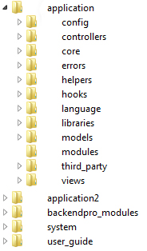

Developing with BackendPro
Since BackendPro has been designed in such a manner which allows you to easily extend the code base I would advise you follow the guide below. Of course you don't have to listen to a word I tell you but in the future maintaining your code may prove more 'interesting' shall we say and you will be on your own.
Modular Design
BackendPro is built upon the Modular Extensions code. This means modules can be used to separate out your controllers/models/views into smaller easier to manage subsets. I won't go into details of how to use Modular Extensions here, for full details please visit the Wiki.
There are two module folders in the default application folder when BackendPro is installed:
- modules - These are all the modules you will create for your specific application.
- backendpro_modules - These are all the core BackendPro modules.
Now I have listed them in the above order for a very good reason. When you request a module file to be loaded it does so by searching for the file in the above list. So by first checking in your modules folder it means you can provide your own implementation/overrides to the core BackendPro modules. For more details of this read on.
Writing Code
Since BackendPro follows a modular design its best to keep your code separate to the BackendPro core files. This includes when you want to extend or change something in BackendPro.
Lets say you have setup your website running BackendPro. But you want to change a value in one of the BackendPro config files. There are two options
- Find the file you want to change and just edit it to how you want.
- Extend the BackendPro module and then
Multiple Application Support
When you take BackendPro out of the box and run it you will notice there is a single application folder. In there we have the modules & backendpro_modules sub-folders. Now this is great for a single application setup but what if you want to take advantage of CodeIgniters Multiple Application Support. You could just copy all the files but this will mean upgrading both applications when a new version of BackendPro is released. Instead follow the steps below.
- Create your new empty application2 directory and create the basic CI folder structure inside. (The folder should look the same as for application in the image above)
- Copy the backendpro_modules folder to the level up.
- Copy the files in application/core to application2/core. (These are the only BackendPro files we must duplicate)
- Open MY_Router.php in both core folders and change the path of the backendpro_modules folder to read ../../backendpro_modules.